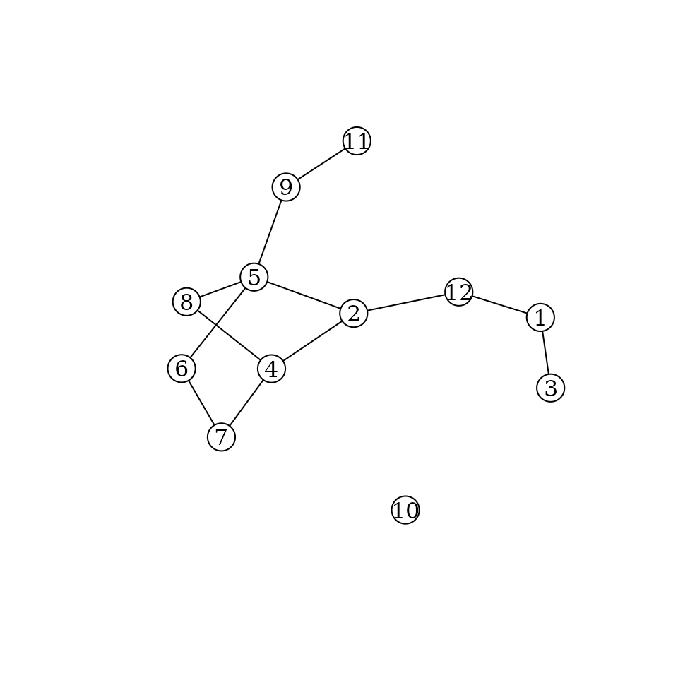

The formats
Let’s generate an example directed and undirected graphs:
set.seed(123)
g_directed <- igraph::sample_gnm(12, 12, directed=TRUE)
g_undirected <- igraph::as.undirected(g_directed)
igraph::igraph_options(vertex.color="white", vertex.label.color="black",
edge.color="black", edge.arrow.size=0.5)
plot(g_directed)
plot(g_undirected)
Digraph6
The ‘digraph6’ is designed for directed graphs. Encoding g_directed will give:
as_digraph6(g_directed)
## [1] "&KG?E@?????GA_C?E??A????_?"Graph6
The ‘graph6’ format is designed for undirected graphs. It is more efficient for dense graphs. Encoding g_undirected will give:
as_graph6(g_undirected)
## [1] "KQOGgoG??@W?"Sparse6
The ‘sparse6’ format is designed for undirected graphs. It is more efficient for sparse graphs. Encoding g_undirected will give:
as_sparse6(g_undirected)
## [1] ":KcAKYRJKdLG_F"Main functions
Main functions for encoding network data are:
Main functions for decoding are:
Implemented functions are shown on the following graph:

Diagram of functions implemented in the ‘rgraph6’ package
Examples
Encode a list of ‘igraph’ objects
Generate a list of igraph objects:
set.seed(666)
igraph_list <- replicate(5, igraph::sample_gnp(10, 0.1, directed=FALSE),
simplify = FALSE)Encode as ‘graph6’ symbols:
as_graph6(igraph_list)
## [1] "ICG_@?W??" "I????@B?G" "I?@O????W" "I@@A?E???" "I?_?_@_??"Encode as ‘sparse6’ symbols:
as_sparse6(igraph_list)
## [1] ":IeASjaeR" ":IoCp{^" ":IiC]Rg" ":IeIgWu`" ":IgAo{@D"Decode a vector of different types of symbols
Using example data g6, d6, and s6 provided with the package:
# Create a vector with a mixture of 'graph6', 'digraph6' and 'sparse6' symbols
x <- c(g6[1], s6[2], d6[3])
x
## [1] "N??E??G?e?G?????GGO"
## [2] ":NkF?XduSqiDRwYU~"
## [3] "&N?R_?E?C?D??U_A????????O???????????????"
# Parse to igraph objects (package igraph required)
igraph_from_text(x)
## [[1]]
## IGRAPH 9c209b2 U--- 15 10 --
## + edges from 9c209b2:
## [1] 1-- 7 1--11 2-- 7 2--11 2--12 2--15 5-- 9 7--10 8--15 13--15
##
## [[2]]
## IGRAPH 907f2e7 U--- 15 13 --
## + edges from 907f2e7:
## [1] 2-- 7 2-- 9 4--10 6--10 6--12 7--12 11--12 5--13 6--13 10--13
## [11] 4--15 10--15 14--15
##
## [[3]]
## IGRAPH 0162edf D--- 15 15 --
## + edges from 0162edf:
## [1] 1-> 8 1->11 1->12 1->13 2->13 2->14 3->10 4-> 7 4-> 9 5-> 8 5->10 5->11
## [13] 5->13 6-> 8 9->14
# Parse to network objects (package network required)
network_from_text(x)
## Loading required namespace: network
## [[1]]
## Network attributes:
## vertices = 15
## directed = FALSE
## hyper = FALSE
## loops = FALSE
## multiple = FALSE
## bipartite = FALSE
## total edges= 10
## missing edges= 0
## non-missing edges= 10
##
## Vertex attribute names:
## vertex.names
##
## No edge attributes
##
## [[2]]
## Network attributes:
## vertices = 15
## directed = FALSE
## hyper = FALSE
## loops = FALSE
## multiple = FALSE
## bipartite = FALSE
## total edges= 13
## missing edges= 0
## non-missing edges= 13
##
## Vertex attribute names:
## vertex.names
##
## No edge attributes
##
## [[3]]
## Network attributes:
## vertices = 15
## directed = TRUE
## hyper = FALSE
## loops = FALSE
## multiple = FALSE
## bipartite = FALSE
## total edges= 15
## missing edges= 0
## non-missing edges= 15
##
## Vertex attribute names:
## vertex.names
##
## No edge attributesTidy graph databases
The formats shine if we need to store large number of graphs in a data frame. Let’s generate a list of random graphs as igraph objects and store them in a data frame column of graph6 symbols:
# Generate list of igraph objects
set.seed(666)
d <- data.frame(
g6 = as_graph6(replicate(
10,
igraph::random.graph.game(sample(3:12, replace=TRUE), p=.5, directed=FALSE),
simplify=FALSE
))
)
d
## g6
## 1 FblF_
## 2 DFc
## 3 HfTaMwk
## 4 KefToktrftZ~
## 5 JPraDzZQ?M?
## 6 Bo
## 7 Ed`w
## 8 Gpuq|{
## 9 EbSG
## 10 ICNa@Gg\\oNice and compact. We can go further by doing some computations and saving the results together with the graph data:
d2 <- within(
d, {
igraphs <- igraph_from_text(g6)
vc <- vapply(igraphs, igraph::vcount, integer(1))
ec <- vapply(igraphs, igraph::ecount, numeric(1))
density <- vapply(igraphs, igraph::edge_density, numeric(1))
})
d2$igraphs <- NULL
str(d2, 1)
## 'data.frame': 10 obs. of 4 variables:
## $ g6 : chr "FblF_" "DFc" "HfTaMwk" "KefToktrftZ~" ...
## $ density: num 0.524 0.5 0.5 0.621 0.436 ...
## $ ec : num 11 5 18 41 24 2 8 19 6 17
## $ vc : int 7 5 9 12 11 3 6 8 6 10… and even save it to a simple CSV file!
write.csv(d2, row.names = FALSE)
## "g6","density","ec","vc"
## "FblF_",0.523809523809524,11,7
## "DFc",0.5,5,5
## "HfTaMwk",0.5,18,9
## "KefToktrftZ~",0.621212121212121,41,12
## "JPraDzZQ?M?",0.436363636363636,24,11
## "Bo",0.666666666666667,2,3
## "Ed`w",0.533333333333333,8,6
## "Gpuq|{",0.678571428571429,19,8
## "EbSG",0.4,6,6
## "ICNa@Gg\o",0.377777777777778,17,10